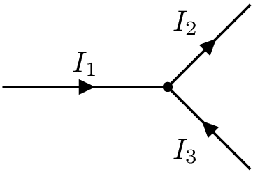
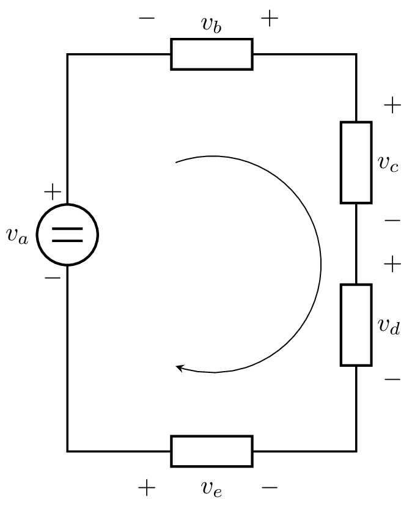
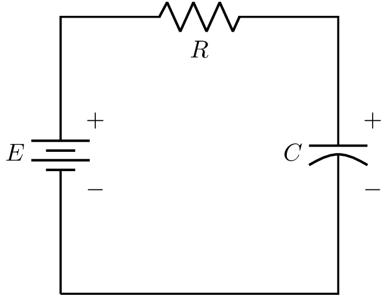

Modelado de sistemas eléctricos y electro-mecánicos#
Ley de corrientes de Kirchhoff#
Tiene como base el principio de conservación de la carga eléctrica. Por ejemplo, considere un nudo en el que convergen tres corrientes como se muestra en la Figura 8
{kind=link}

Figura 8 Sistema masa-resorte-amortiguador.#
La primera ley de Kirchhoff denotada como LCK, permite establecer la siguiente relación
de la cual se desprende la siguiente definición.
Definición 33
La suma de las corrientes que entran en un nudo es igual a la suma de las corrientes que salen del mismo [Antón et al., 2007]
Equivalentemente podemos tener
que nos dice, según la siguiente definición
Definición 34
La suma algebráica de todas las corrientes que entran en un nudo es igual cero [Antón et al., 2007].
Importante
Las corrientes que entran en el nudo son positivas mientras que las corrientes que salen son negativas.
Ley de tensiones de Kirchhoff#
Tiene como base el principio de conservación de la energía. Por ejemplo, considere el circuito mostrado en la Figura 9 donde la polaridad de la tensión fue elegida de forma arbitraria
{kind=link}

Figura 9 Sistema masa-resorte-amortiguador.#
Si recorremos un lazo en un sentido arbitrario -escogido de forma arbitraria en el sentido de las agujas del reloj- y aplicamos la segunda ley de Kirchhoff, llegamos a la siguiente expresión
o equivalentemente
finalmente, reacomodando términos, obtenemos
Diodo tunel#
El circuito de diodo tunel se muestra en la siguiente figura

Figura 10 Diodo túnel.#
donde la relación constitutiva que caracteriza el tunel diodo está dada por \(i_{R} = h(v_{R})\). Los elementos almacenadores de energía son el inductor \(L\) y el capacitor \(C\). Asumiendo que estos elementos son lineales e invariantes en el tiempo, podemos llegar a representar este sistema a partir del siguiente modelo
donde \(v\) e \(i\) denotan el voltaje y corriente a través de un elemento. Además, el sub índice especifica el elemento.
Las ecuaciones del circuito de diodo tunel se pueden representar en forma de espacio-estados si consideramos \(u=E\) como una entrada constante, \(x_{1} = v_{C}\) (tensión en el capacitor) y \(x_{2} = i_{L}\) (corriente en el inductor).
Utilizando las Leyes de Kirchhoff y expresando \(i_{C}\) como una función de las variables de estado \(x_{1}\), \(x_{2}\) y la entrada \(u\), tenemos lo siguiente
por consiguiente
Del mismo modo, expresamos \(v_{L}\) como una función de las variables \(x_{1}\), \(x_{2}\), \(u\) y utilizamos las Leyes de Kirchhoff como sigue
donde \(v_{L} = -x_{1} - Rx_{2} + u\).
Reescribiendo las ecuaciones del sistema (33), tenemos
Circuito R-C#
La relación que establece el flujo electromagnético \(\phi\) y la corriente \(i\) que lo produce está dada por la siguiente ecuación
donde \(L\) es una constante que depende de los factores geométricos y de entorno llamada inductancia.
Los cambios de flujo electromagnético originan potenciales eléctricos relacionados por la Ley de Faraday
donde \(u_{L}\) denota el voltaje en las terminales de la inductancia a razón del cambio de flujo. Por consiguiente, la Ley de Faraday se puede expresar como sigue
En elementos resistivos el voltaje \(u_{R}\) entre el componente y la corriente \(i\) que circula por él obedecen a la Ley de Ohm dada como siguiente
donde \(R\) es una constante que depende del componente denominado resistencia.
El voltaje \(u_{C}\) entre las terminales de una capacitancia y la carga \(q\) siguen la siguiente relación
donde \(C\) es una constante que depende de la geometría y el entorno denominada capacitancia. Si consideramos que la corriente se define como una variación temporal de carga
entonces \(u_{C}\) se expresa en los siguientes términos
Considere el circuito mostrado en la Figura 11
Aplicando la Ley de tensiones de Kirchhoff, obtenemos
Sustituyendo (35) y (36) en (37), tenemos
expresado la ecuación anterior en términos de la carga \(Q\), tenemos la siguiente expresión
Aplicando la Ley de corrientes de Kirchhoff, obtenemos
dado que el voltaje entre los componentes eléctricos es el mismo y lo denotamos por \(u\), tenemos
Considerando el modelo dado en la Ec. (38) y tomando \(V\) como la carga en el capacitor dividida por la capacitancia \(V := \frac{Q}{C}\) y \(\dot{V}:= \frac{\dot{Q}}{C}\), sustituyendo tenemos
Entonces, el modelo del circuito RC mostrado en la Figura 11 está dado por la siguiente ecuación
{kind=link}

Figura 11 Modelo de circuito R-C.#